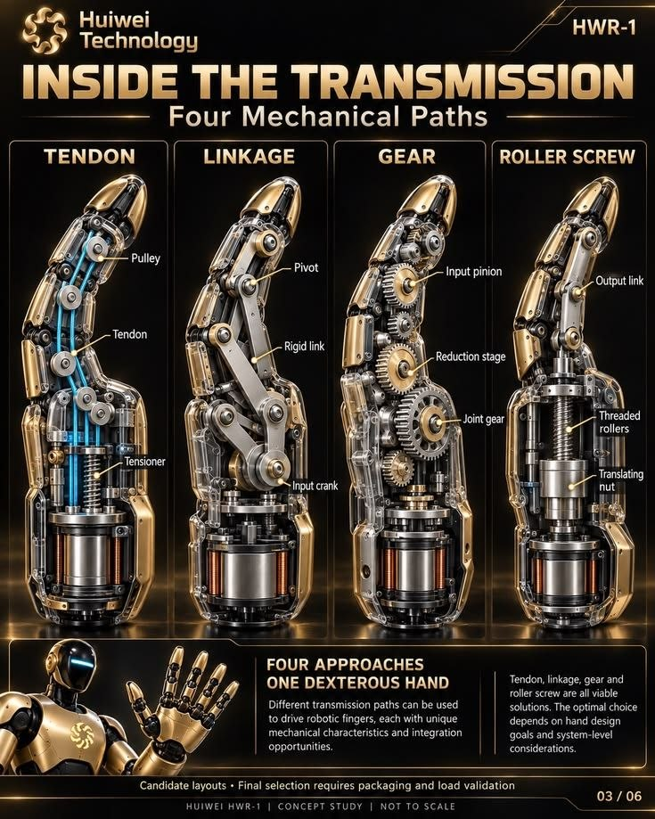

Cuando decides cerrar la mano, los músculos del antebrazo se encienden un instante antes de moverse, y esa electricidad se puede leer desde la piel. Esta página explica cómo una mano robótica casera de 17 articulaciones puede leerla y copiarte, y lleva a una simulación 3D de cómo construirla en Uruguay.
Abrir la demoLeer el marco teóricoEs una exploración del taller y un posible proyecto futuro de Tiny Moon Labs. Hoy existe como simulación interactiva:
Las manos robóticas buenas y las prótesis mioeléctricas existen, pero son caras y cerradas. Queremos ver hasta dónde llega una hecha con piezas que se consiguen acá y con todo el código abierto.
27 huesos y más de veinte movimientos posibles, con los músculos en el antebrazo y tendones que cruzan la muñeca. Copiarla bien es uno de los problemas abiertos de la robótica.
Una mano mioeléctrica comercial puede costar decenas de miles de dólares. La mayoría de quienes la necesitan en la región no llega a tener una.
Cada contracción genera microvoltios en la piel. Con electrodos de gel y un amplificador de pocos dólares se puede leer, y un microcontrolador alcanza para entenderla.
Diseño, código, lista de piezas con precios y armado paso a paso: todo público, para que otros lo mejoren, lo adapten o lo usen para enseñar.
Cuatro pasos: el músculo genera una señal, el brazalete la capta, un algoritmo la convierte en una decisión y la mano la ejecuta con servos y bielas.
Cada neurona motora dispara un pequeño potencial en las fibras que controla. Desde la piel se ve la suma de cientos de ellos: un ruido de 20 a 450 Hz cuya amplitud, de décimas de milivoltio a cerca de 1 mV, crece con la fuerza. Es la electromiografía de superficie, o EMG.
La señal aparece 30 a 100 ms antes de que el dedo se mueva: le da ventaja al control.
Los músculos que mueven los dedos tienen el cuerpo en el antebrazo: los flexores del lado de la palma y los extensores del lado del dorso. Ocho pares de electrodos, a 2 cm entre sí y alineados con las fibras, captan cada zona; un electrodo de referencia va sobre el hueso del codo.
Los músculos se mezclan: cada canal escucha varios a la vez y los profundos llegan débiles. Por eso no alcanza con mirar un canal por dedo.
Un ESP32 filtra la señal, la corta en ventanas de 150 ms y saca cuatro números por canal: amplitud media, largo de onda, cruces por cero y cambios de pendiente. Con esos 32 números, un clasificador lineal reconoce uno de diez gestos y la amplitud decide cuánto cerrar.
Antes de mandar la orden, un filtro antivibración congela la mano cuando la persona está quieta: los servos dejan de temblar.
Como las manos diestras comerciales, los motores van dentro de la mano: 16 micro servos en la palma, en las falanges y en el pulgar, y uno más grande en la muñeca. Cada uno mueve su falange con una biela rígida de acero.
La demo junta ideas de kits educativos, manos abiertas de laboratorio y manos diestras industriales.

Una simulación 3D interactiva hecha en el navegador. Funciona mejor en una computadora.
La mano de acrílico con sus servos y bielas, que se puede cambiar en vivo por tendones, engranajes o tornillos de rodillos, y el brazo de una persona con los músculos reales que se iluminan al activarse. Puedes marcar y aislar cada pieza, o abrirla en despiece.
EMG simulada en 8 canales, osciloscopio, filtros, reconocimiento de 10 gestos, calibración con matriz de confusión, antivibración y control de cada dedo por separado.
Con la cámara web (MediaPipe, en el navegador) o con un Leap Motion, tu mano reemplaza a la persona simulada y pasa por todo el camino hasta los servos.
Lista completa con links y precios relevados en Uruguay, en pesos y en dólares, y 13 pasos de armado más 7 de calibración.
Relevamiento de octubre de 2026, sin flete ni impuestos de importación.
El código es abierto, con licencia MIT: github.com/missingus3r/mano-bionica. Se abre con doble clic, sin instalar nada.
Hoy no hay fecha ni compromiso. Si el proyecto avanza, iría en este orden y lo mostraríamos acá, como todo lo del taller.